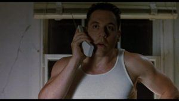

< < < Back
How To Be Persistent Without Being Needy – Return Of Kings
In the show Californication, Hank Moody is a womanizing author who always has his heart with his ex-wife, Karen. Whenever they see each other, he always tries to kiss her, flirt with her, and get her back. No matter how many times she declines, he always gives it another shot. Sounds needy, right?
Taken at face value, Hank Moody sounds like a needy, borderline sociopathic stalker who won’t let his ex-love go. But somehow when you watch his attempts to rekindle his romance with Karen on the show, he doesn’t appear to be needy at all.
How is this possible?
A paradox in dating and relationships is that the last man standing usually gets the girl, but when he contacts her too often, he’s being needy. Remember Mikey from the movie Swingers when he leaves 6 messages on Nikki’s voicemail in a span of 10 minutes?

So what’s the difference between Mikey and Hank Moody?
Playful indifference. It’s the kind of vibe that guys who are naturally good with women have. They exude a lightheartedness about them, and it seems like even if things don’t go their way, they don’t really care.
If you ever notice someone who is naturally good with women, and naturally good with people in general, he is able to have a good time with anyone. He doesn’t discriminate between old or young, male or female.
Many guys are worried about approach anxiety, but if you have this vibe throughout your daily life, you’ll know how to approach a girl you don’t know with ease. In fact, you’ll find that many women will want to have conversations with you without you having to elicit it. Thus, a guy with playful indifference can start conversations and make multiple sexual advances without creeping a girl out. In fact, she’ll often laugh and be charmed by his audacity.
The reason guys with this vibe can get away with so much is because they build up social capital. To explain social capital, imagine if one of your best friends from school tells you, “Hey, I need $10 for lunch, can you help me out?” Most likely, you’d be more than willing to spot him.
Now imagine if you come across a homeless man on the street who asks you for $10. All of the sudden, you become Ebenezer Scrooge. Why?
Well, you’ve known your best friend for years, but the homeless man is just a raggedy stranger to you. Basically, your friend has built up lots of social capital with you, and the homeless man has none.
You can think of social capital as a bank account for trust. Whenever you share a laugh or an experience with someone, you’re making deposits into each other’s social bank accounts. And when you have enough trust built up in the account, the other person is more likely to comply with your requests.
So if the homeless person cracks a few jokes that you find funny and you start engaging in a witty back-and-forth conversation that you enjoy, you’re more likely to give up the $10.
What does this have to do with neediness and persistence?
A guy who is fun and outgoing is skilled at building social capital quickly because people enjoy his company. Thus, a girl is more likely to jump on board with his plans because he’s flooding her social bank with trust. But if that guy were to suddenly lose his charisma and started chasing a girl with repeated requests to go on a date, then he’d be spending social capital that he doesn’t have. When this happens, he comes across and needy, desperate, and creepy.
So neediness comes into play when your social bank account is at zero, but you’re still trying to move things forward with a girl that doesn’t want anything to do with you.
So the next question is, how do you become the kind of guy who has an endless supply of social capital? How do you become Hank Moody?

Detach.
When you learn to accept things as they are, and, especially, accept that the worst possible outcome might occur and you’re OK with that, then you’ll be living with a sense of levity about you. This is why people who survive cancer usually have the brightest outlook on life. It’s because they’ve accepted death, so everything that they experience in life is done without expectations.
People who take life for granted forget that it can be taken away in an instant. Likewise, people who are in relationships forget that a breakup could be just around the corner, and someone who is pursuing a girl refuses to accept life without her in it.
However, if you come to realize and accept that life, relationships, and romances are ephemeral, then you’ll move through these events with a playful indifference—you don’t know what the outcome will be, but you’re OK with that, so you’re just going to enjoy the ride along the way.
So if you want to be Hank Moody, then let go of your expectations and realize that the only way to press forward is by keeping yourself amused.
Read Next: 11 Fundamental Guidelines For Solid Game